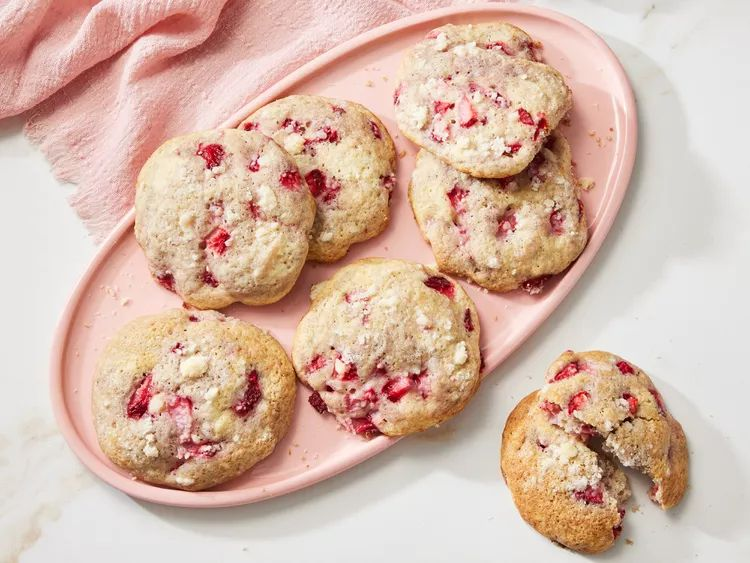

Strawberry Shortcake Cookies

Description
These Strawberry Shortcake Cookies will knock your socks off--figuratively in all likelihood.
You never can tell though, why not try it today!
Ingredients
Cookies
- 1/2 cup unsalted butter, softened
- 3/4 cup white sugar
- 1 large egg, at room temperature
- 1 tablespoon vanilla extract
- 1 teaspoon baking powder
- 1/2 teaspoon baking soda
- 1/2 teaspoon kosher salt
- 1 3/4 cups all-purpose flour
- 2 tablespoons heavy whipping cream
- 1 cup finely chopped fresh strawberries, divided
Crumble
- 2 tablespoons unsalted butter, softened
- 1/4 cup white sugar
- 1/3 cup all-purpose flour
Steps
-
Gather the ingredients.
-
Preheat the oven to 350 degrees F (175 degrees C).
Place racks in top 1/3 and bottom 1/3 positions.
Line 2 large rimmed baking sheets with parchment paper; set aside.
-
For cookies, beat butter and sugar with a stand mixer fitted with a paddle attachment
on medium speed until light and creamy, about 2 minutes, stopping to scrape down sides of bowl as needed.
Add egg and vanilla; beat until fully combined and smooth, about 30 seconds.
-
Add baking powder, baking soda, salt, and flour to sugar mixture in mixer;
beat until no dry streaks remain.
Reduce mixer speed to low, and slowly add heavy cream;
beat until fully combined, about 30 seconds.
-
Gently fold 3/4 cup strawberries into cookie mixture with a rubber spatula until evenly distributed.
Scoop dough into 14 equal portions (about 3 tablespoons each) onto baking sheets;
arrange 7 cookies per baking sheet, spaced 1 1/2 inches apart.
-
For crumble, stir butter, white sugar, and flour together in a small bowl until fully combined;
using your fingers, rub mixture into small crumbles.
Gently press crumble and remaining 1/4 cup strawberries evenly into tops of dough balls.
-
Bake in the preheated oven until edges are golden brown, 12 to 15 minutes,
rotating baking sheets between top and bottom racks and from front to back halfway through baking time.
Cool on baking sheets for 5 minutes.
Transfer cookies to a wire rack to cool completely, about 20 minutes.
Original recipe by Amanda Holstein on Allrecipes